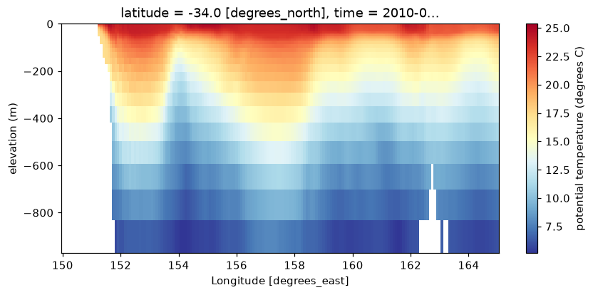

Sea level, ocean reanalysis and SST from Copernicus Marine’s public Zarr v2 stores.
Copernicus Marine serves its products as Zarr v2 with consolidated metadata on an S3-compatible endpoint, twice over: timeChunked.zarr (one time step, a large spatial block per chunk: good for maps) and geoChunked.zarr (many time steps, a small spatial block: good for time series). The buckets refuse listing, which does not matter: the ZARR: prefix tells GDAL what it is looking at, and GDAL goes from .zmetadata to chunk keys by the Zarr spec.
The store URLs are versioned by dataset (_202411, _202311, …), and Copernicus retires old versions, so these addresses are stable until the next version of each product.
The ARCO stores name the vertical axis elevation, not depth as the original netCDF does; the values printed above show its sign and order. The cells below select by distance from the surface, so they work whichever way the axis runs.
A zonal section along 34S, from the coast across the current, on one day:
if live("cmems-glorys"): z = gl["elevation"] upper = z[np.abs(z) <=1000] # the upper 1000 m, either order sec = (gl["thetao"].sel(time="2010-01-15").sel(latitude=-34, method="nearest") .sel(longitude=slice(150, 165), elevation=upper)) fig, ax = plt.subplots(figsize=(9, 3.8)) sec.plot(ax=ax, x="longitude", y="elevation", cmap="RdYlBu_r", cbar_kwargs={"label": "potential temperature (degrees C)"}) ax.set_ylabel("elevation (m)") plt.show()

GLORYS12 potential temperature on a section along 34S, upper 1000 m, 15 January 2010.